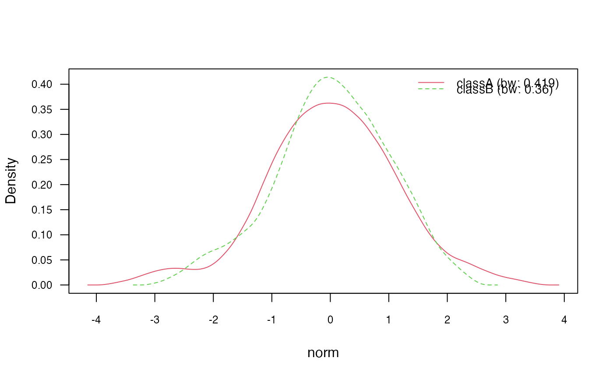
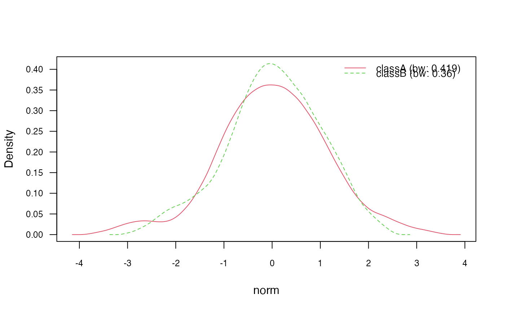
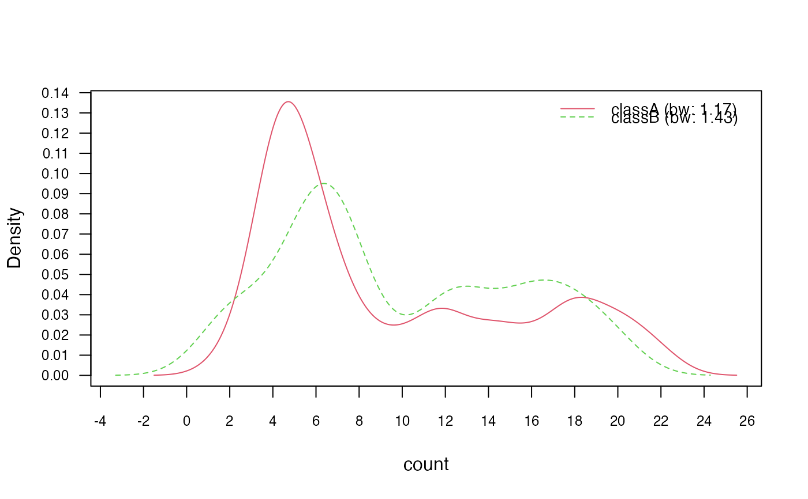
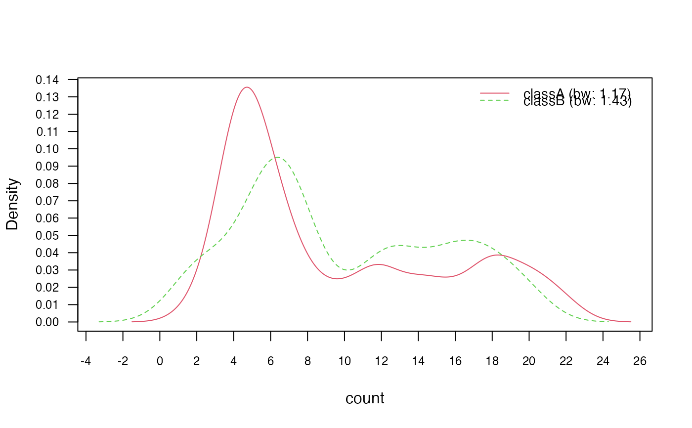
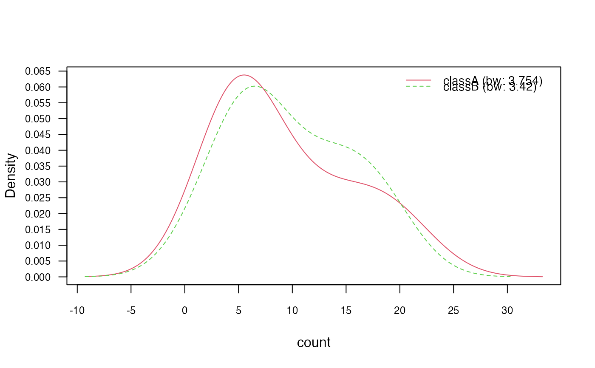
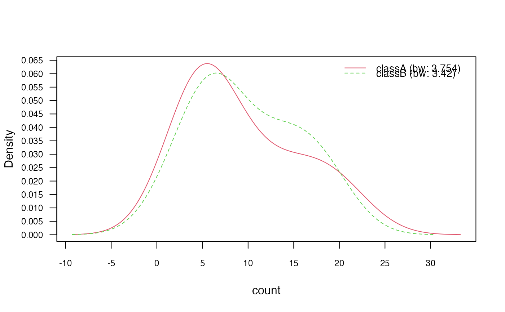

Naive Bayes Classifier
naive_bayes.Rdnaive_bayes is used to fit Naive Bayes model in which predictors are assumed to be independent within each class label.
Usage
# Default S3 method
naive_bayes(x, y, prior = NULL, laplace = 0,
usekernel = FALSE, usepoisson = FALSE, ...)
# S3 method for class 'formula'
naive_bayes(formula, data, prior = NULL, laplace = 0,
usekernel = FALSE, usepoisson = FALSE,
subset, na.action = stats::na.pass, ...)Arguments
- x
matrix or dataframe with categorical (character/factor/logical) or metric (numeric) predictors.
- y
class vector (character/factor/logical).
- formula
an object of class
"formula"(or one that can be coerced to "formula") of the form:class ~ predictors(class has to be a factor/character/logical).- data
matrix or dataframe with categorical (character/factor/logical) or metric (numeric) predictors.
- prior
vector with prior probabilities of the classes. If unspecified, the class proportions for the training set are used. If present, the probabilities should be specified in the order of the factor levels.
- laplace
value used for Laplace smoothing (additive smoothing). Defaults to 0 (no Laplace smoothing).
- usekernel
logical; if
TRUE,densityis used to estimate the class conditional densities of metric predictors. This applies to vectors with class "numeric". For further details on interaction betweenusekernelandusepoissonparameters please see Note below.- usepoisson
logical; if
TRUE, Poisson distribution is used to estimate the class conditional PMFs of integer predictors (vectors with class "integer").- subset
an optional vector specifying a subset of observations to be used in the fitting process.
- na.action
a function which indicates what should happen when the data contain
NAs. By default (na.pass), missing values are not removed from the data and are then omited while constructing tables. Alternatively,na.omitcan be used to exclude rows with at least one missing value before constructing tables.- ...
other parameters to
densitywhenusekernel = TRUE(na.rmdefaults toTRUE) (for instanceadjust,kernelorbw).
Value
naive_bayes returns an object of class "naive_bayes" which is a list with following components:
- data
list with two components:
x(dataframe with predictors) andy(class variable).- levels
character vector with values of the class variable.
- laplace
amount of Laplace smoothing (additive smoothing).
- tables
list of tables. For each categorical predictor a table with class-conditional probabilities, for each integer predictor a table with Poisson mean (if
usepoisson = TRUE) and for each metric predictor a table with a mean and standard deviation ordensityobjects for each class. The objecttablescontains also an additional attribute "cond_dist" - a character vector with the names of conditional distributions assigned to each feature.- prior
numeric vector with prior probabilities.
- usekernel
logical;
TRUE, if the kernel density estimation was used for estimating class conditional densities of numeric variables.- usepoisson
logical;
TRUE, if the Poisson distribution was used for estimating class conditional PMFs of non-negative integer variables.- call
the call that produced this object.
Details
Numeric (metric) predictors are handled by assuming that they follow Gaussian distribution, given the class label. Alternatively, kernel density estimation can be used (usekernel = TRUE) to estimate their class-conditional distributions. Also, non-negative integer predictors (variables representing counts) can be modelled with Poisson distribution (usepoisson = TRUE); for further details please see Note below. Missing values are not included into constructing tables. Logical variables are treated as categorical (binary) variables.
Note
The class "numeric" contains "double" (double precision floating point numbers) and "integer". Depending on the parameters usekernel and usepoisson different class conditional distributions are applied to columns in the dataset with the class "numeric":
If
usekernel=FALSEandpoisson=FALSEthen Gaussian distribution is applied to each "numeric" variable ("numeric"&"integer" or "numeric"&"double")If
usekernel=TRUEandpoisson=FALSEthen kernel density estimation (KDE) is applied to each "numeric" variable ("numeric"&"integer" or "numeric"&"double")If
usekernel=FALSEandpoisson=TRUEthen Gaussian distribution is applied to each "double" vector and Poisson to each "integer" vector. (Gaussian: "numeric" & "double"; Poisson: "numeric" & "integer")If
usekernel=TRUEandpoisson=TRUEthen kernel density estimation (KDE) is applied to each "double" vector and Poisson to each "integer" vector. (KDE: "numeric" & "double"; Poisson: "numeric" & "integer")
By default usekernel=FALSE and poisson=FALSE, thus Gaussian is applied to each numeric variable.
On the other hand, "character", "factor" and "logical" variables are assigned to the Categorical distribution with Bernoulli being its special case.
Prior the model fitting the classes of columns in the data.frame "data" can be easily checked via:
sapply(data, class)sapply(data, is.numeric)sapply(data, is.double)sapply(data, is.integer)
Author
Michal Majka, michalmajka@hotmail.com
Examples
### Simulate example data
n <- 100
set.seed(1)
data <- data.frame(class = sample(c("classA", "classB"), n, TRUE),
bern = sample(LETTERS[1:2], n, TRUE),
cat = sample(letters[1:3], n, TRUE),
logical = sample(c(TRUE,FALSE), n, TRUE),
norm = rnorm(n),
count = rpois(n, lambda = c(5,15)))
train <- data[1:95, ]
test <- data[96:100, -1]
### 1) General usage via formula interface
nb <- naive_bayes(class ~ ., train)
summary(nb)
#>
#> ================================= Naive Bayes ==================================
#>
#> - Call: naive_bayes.formula(formula = class ~ ., data = train)
#> - Laplace: 0
#> - Classes: 2
#> - Samples: 95
#> - Features: 5
#> - Conditional distributions:
#> - Bernoulli: 2
#> - Categorical: 1
#> - Gaussian: 2
#> - Prior probabilities:
#> - classA: 0.4842
#> - classB: 0.5158
#>
#> --------------------------------------------------------------------------------
# Classification
predict(nb, test, type = "class")
#> [1] classA classB classA classA classA
#> Levels: classA classB
nb %class% test
#> [1] classA classB classA classA classA
#> Levels: classA classB
# Posterior probabilities
predict(nb, test, type = "prob")
#> classA classB
#> [1,] 0.7174638 0.2825362
#> [2,] 0.2599418 0.7400582
#> [3,] 0.6341795 0.3658205
#> [4,] 0.5365311 0.4634689
#> [5,] 0.7186026 0.2813974
nb %prob% test
#> classA classB
#> [1,] 0.7174638 0.2825362
#> [2,] 0.2599418 0.7400582
#> [3,] 0.6341795 0.3658205
#> [4,] 0.5365311 0.4634689
#> [5,] 0.7186026 0.2813974
# Helper functions
tables(nb, 1)
#> --------------------------------------------------------------------------------
#> :: bern (Bernoulli)
#> --------------------------------------------------------------------------------
#>
#> bern classA classB
#> A 0.5000000 0.5510204
#> B 0.5000000 0.4489796
#>
#> --------------------------------------------------------------------------------
get_cond_dist(nb)
#> bern cat logical norm count
#> "Bernoulli" "Categorical" "Bernoulli" "Gaussian" "Gaussian"
# Note: all "numeric" (integer, double) variables are modelled
# with Gaussian distribution by default.
### 2) General usage via matrix/data.frame and class vector
X <- train[-1]
class <- train$class
nb2 <- naive_bayes(x = X, y = class)
nb2 %prob% test
#> classA classB
#> [1,] 0.7174638 0.2825362
#> [2,] 0.2599418 0.7400582
#> [3,] 0.6341795 0.3658205
#> [4,] 0.5365311 0.4634689
#> [5,] 0.7186026 0.2813974
### 3) Model continuous variables non-parametrically
### via kernel density estimation (KDE)
nb_kde <- naive_bayes(class ~ ., train, usekernel = TRUE)
summary(nb_kde)
#>
#> ================================= Naive Bayes ==================================
#>
#> - Call: naive_bayes.formula(formula = class ~ ., data = train, usekernel = TRUE)
#> - Laplace: 0
#> - Classes: 2
#> - Samples: 95
#> - Features: 5
#> - Conditional distributions:
#> - Bernoulli: 2
#> - Categorical: 1
#> - KDE: 2
#> - Prior probabilities:
#> - classA: 0.4842
#> - classB: 0.5158
#>
#> --------------------------------------------------------------------------------
get_cond_dist(nb_kde)
#> bern cat logical norm count
#> "Bernoulli" "Categorical" "Bernoulli" "KDE" "KDE"
nb_kde %prob% test
#> classA classB
#> [1,] 0.6497360 0.3502640
#> [2,] 0.2278895 0.7721105
#> [3,] 0.5914831 0.4085169
#> [4,] 0.5877709 0.4122291
#> [5,] 0.7018091 0.2981909
# Visualize class conditional densities
plot(nb_kde, "norm", arg.num = list(legend.cex = 0.9), prob = "conditional")
 plot(nb_kde, "count", arg.num = list(legend.cex = 0.9), prob = "conditional")
plot(nb_kde, "count", arg.num = list(legend.cex = 0.9), prob = "conditional")
 ### ?density and ?bw.nrd for further documentation
# 3.1) Change Gaussian kernel to biweight kernel
nb_kde_biweight <- naive_bayes(class ~ ., train, usekernel = TRUE,
kernel = "biweight")
nb_kde_biweight %prob% test
#> classA classB
#> [1,] 0.6563243 0.3436757
#> [2,] 0.2349626 0.7650374
#> [3,] 0.5916868 0.4083132
#> [4,] 0.5680861 0.4319139
#> [5,] 0.6981859 0.3018141
plot(nb_kde_biweight, c("norm", "count"),
arg.num = list(legend.cex = 0.9), prob = "conditional")

### ?density and ?bw.nrd for further documentation
# 3.1) Change Gaussian kernel to biweight kernel
nb_kde_biweight <- naive_bayes(class ~ ., train, usekernel = TRUE,
kernel = "biweight")
nb_kde_biweight %prob% test
#> classA classB
#> [1,] 0.6563243 0.3436757
#> [2,] 0.2349626 0.7650374
#> [3,] 0.5916868 0.4083132
#> [4,] 0.5680861 0.4319139
#> [5,] 0.6981859 0.3018141
plot(nb_kde_biweight, c("norm", "count"),
arg.num = list(legend.cex = 0.9), prob = "conditional")

 # 3.2) Change "nrd0" (Silverman's rule of thumb) bandwidth selector
nb_kde_SJ <- naive_bayes(class ~ ., train, usekernel = TRUE,
bw = "SJ")
nb_kde_SJ %prob% test
#> classA classB
#> [1,] 0.6125951 0.3874049
#> [2,] 0.1827523 0.8172477
#> [3,] 0.5784133 0.4215867
#> [4,] 0.7032465 0.2967535
#> [5,] 0.6699161 0.3300839
plot(nb_kde_SJ, c("norm", "count"),
arg.num = list(legend.cex = 0.9), prob = "conditional")
# 3.2) Change "nrd0" (Silverman's rule of thumb) bandwidth selector
nb_kde_SJ <- naive_bayes(class ~ ., train, usekernel = TRUE,
bw = "SJ")
nb_kde_SJ %prob% test
#> classA classB
#> [1,] 0.6125951 0.3874049
#> [2,] 0.1827523 0.8172477
#> [3,] 0.5784133 0.4215867
#> [4,] 0.7032465 0.2967535
#> [5,] 0.6699161 0.3300839
plot(nb_kde_SJ, c("norm", "count"),
arg.num = list(legend.cex = 0.9), prob = "conditional")
 
# 3.3) Adjust bandwidth
nb_kde_adjust <- naive_bayes(class ~ ., train, usekernel = TRUE,
adjust = 1.5)
nb_kde_adjust %prob% test
#> classA classB
#> [1,] 0.6773096 0.3226904
#> [2,] 0.2428150 0.7571850
#> [3,] 0.6080495 0.3919505
#> [4,] 0.5602177 0.4397823
#> [5,] 0.6910385 0.3089615
plot(nb_kde_adjust, c("norm", "count"),
arg.num = list(legend.cex = 0.9), prob = "conditional")

# 3.3) Adjust bandwidth
nb_kde_adjust <- naive_bayes(class ~ ., train, usekernel = TRUE,
adjust = 1.5)
nb_kde_adjust %prob% test
#> classA classB
#> [1,] 0.6773096 0.3226904
#> [2,] 0.2428150 0.7571850
#> [3,] 0.6080495 0.3919505
#> [4,] 0.5602177 0.4397823
#> [5,] 0.6910385 0.3089615
plot(nb_kde_adjust, c("norm", "count"),
arg.num = list(legend.cex = 0.9), prob = "conditional")
 
### 4) Model non-negative integers with Poisson distribution
nb_pois <- naive_bayes(class ~ ., train, usekernel = TRUE, usepoisson = TRUE)
summary(nb_pois)
#>
#> ================================= Naive Bayes ==================================
#>
#> - Call: naive_bayes.formula(formula = class ~ ., data = train, usekernel = TRUE, usepoisson = TRUE)
#> - Laplace: 0
#> - Classes: 2
#> - Samples: 95
#> - Features: 5
#> - Conditional distributions:
#> - Bernoulli: 2
#> - Categorical: 1
#> - Poisson: 1
#> - KDE: 1
#> - Prior probabilities:
#> - classA: 0.4842
#> - classB: 0.5158
#>
#> --------------------------------------------------------------------------------
get_cond_dist(nb_pois)
#> bern cat logical norm count
#> "Bernoulli" "Categorical" "Bernoulli" "KDE" "Poisson"
# Posterior probabilities
nb_pois %prob% test
#> classA classB
#> [1,] 0.6675738 0.3324262
#> [2,] 0.2606488 0.7393512
#> [3,] 0.6361172 0.3638828
#> [4,] 0.5774983 0.4225017
#> [5,] 0.7396940 0.2603060
# Class conditional distributions
plot(nb_pois, "count", prob = "conditional")
# Marginal distributions
plot(nb_pois, "count", prob = "marginal")

### 4) Model non-negative integers with Poisson distribution
nb_pois <- naive_bayes(class ~ ., train, usekernel = TRUE, usepoisson = TRUE)
summary(nb_pois)
#>
#> ================================= Naive Bayes ==================================
#>
#> - Call: naive_bayes.formula(formula = class ~ ., data = train, usekernel = TRUE, usepoisson = TRUE)
#> - Laplace: 0
#> - Classes: 2
#> - Samples: 95
#> - Features: 5
#> - Conditional distributions:
#> - Bernoulli: 2
#> - Categorical: 1
#> - Poisson: 1
#> - KDE: 1
#> - Prior probabilities:
#> - classA: 0.4842
#> - classB: 0.5158
#>
#> --------------------------------------------------------------------------------
get_cond_dist(nb_pois)
#> bern cat logical norm count
#> "Bernoulli" "Categorical" "Bernoulli" "KDE" "Poisson"
# Posterior probabilities
nb_pois %prob% test
#> classA classB
#> [1,] 0.6675738 0.3324262
#> [2,] 0.2606488 0.7393512
#> [3,] 0.6361172 0.3638828
#> [4,] 0.5774983 0.4225017
#> [5,] 0.7396940 0.2603060
# Class conditional distributions
plot(nb_pois, "count", prob = "conditional")
# Marginal distributions
plot(nb_pois, "count", prob = "marginal")
 if (FALSE) { # \dontrun{
vars <- 10
rows <- 1000000
y <- sample(c("a", "b"), rows, TRUE)
# Only categorical variables
X1 <- as.data.frame(matrix(sample(letters[5:9], vars * rows, TRUE),
ncol = vars))
nb_cat <- naive_bayes(x = X1, y = y)
nb_cat
system.time(pred2 <- predict(nb_cat, X1))
} # }
if (FALSE) { # \dontrun{
vars <- 10
rows <- 1000000
y <- sample(c("a", "b"), rows, TRUE)
# Only categorical variables
X1 <- as.data.frame(matrix(sample(letters[5:9], vars * rows, TRUE),
ncol = vars))
nb_cat <- naive_bayes(x = X1, y = y)
nb_cat
system.time(pred2 <- predict(nb_cat, X1))
} # }